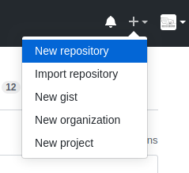
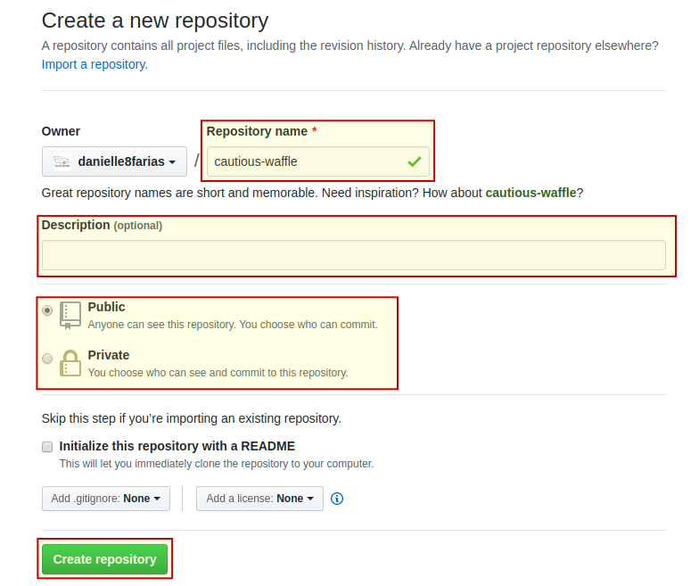
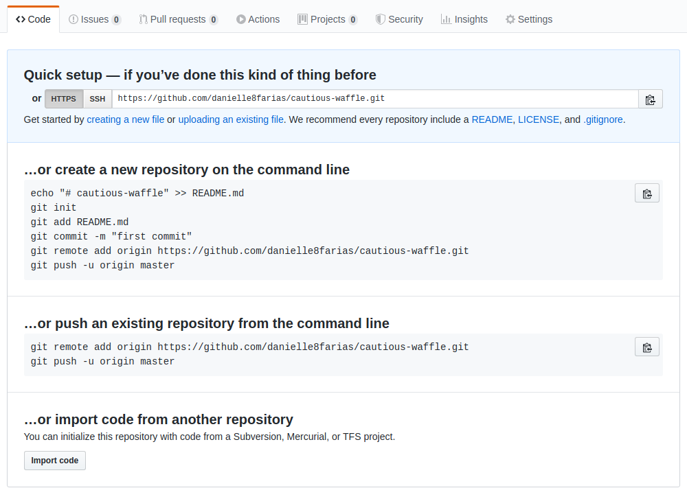
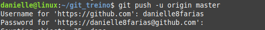
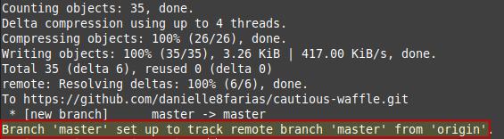
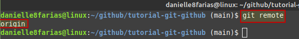
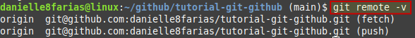

Acesse sua conta no GitHub.
- Caso ainda não tenha, basta criá-la (é fácil e rápido).
Clique o sinal de mais para abrir o menu e em seguida em New repository.
Dê o nome de sua preferência, além da descrição e indique se seu repositório será público ou privado.
Para finalizar, clique em Create repository.
Em seguida aparecerá uma tela com três opções:
- A primeira diz respeito a crianção de um novo repositório (inclui a inicialização do Git no diretório).
- A segunda diz respeito a um repositório já existente e que desejo colocar no GitHub (é a situação que irei utilizar).
- A terceira diz respeito a importação de um código de outro repositório.
Sendo assim, dentro da pasta do nosso projeto, digitamos o comando:
$ git remote add origin <link_para_o_repositório_do_seu_projeto>
- $ indica que você deve usar o usuário comum para fazer essa operação.
- link para o repositório do seu projeto sem os sinais < e >.
para fazer a ligação com o repositório remoto.
No caso do exemplo que estamos usando, fazemos:
$ git remote add origin https://github.com/danielle8farias/cautious-waffle.git
Logo após
$ git push -u origin main
- Isso significa as modificações no branch(ramo) local, denominado main será empurrado(push) para o remoto chamado origin.
- O -u é uma atalho para o comando --set-upstream; ficando definido esse branch como uso padrão até que você o modifique novamente. Das próximas vezes em que você precisar empurrar seu código para o GitHub basta usar o comando git push para esse mesmo branch.
Em seguida, será pedido seu nome de usuária e sua senha do GitHub:
Se tudo estiver certo, o retorno será algo similar a:
Fazendo a associação entre os branchs master(local) e origin(remoto).
Verificando o repositório remoto
Caso precise verificar se há um repositório remoto em algum diretório local, digite:
$ git remote
O retorno será o nome do branch remoto.
Exemplo:
Para saber mais detalhes desse repositório remoto, digite no terminal:
$ git remote -v
E o retorno será o link para o repositório remoto.
